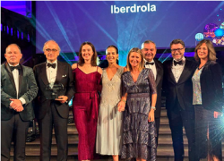

Iberdrola recibe el premio del Financial Times al mejor Proyecto Pro Bono Jurídico Fiscal en la categoría de Sostenibilidad
Iberdrola ha recibido el premio “FT Innovative Lawyers Awards” en la categoría Negocio Responsable por su proyecto Pro Bono, siendo además la primera empresa española que lo consigue.